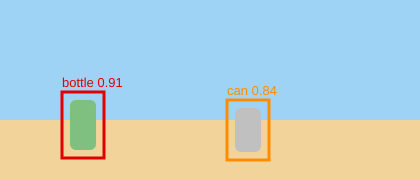

FloatWatch
탐지하기
결과
팀 소개
사진 한 장으로 바다 쓰레기를 찾아요
YOLO 객체 탐지 모델 · 클래스 3종 (bottle, can, bag)
1. 사진 올리기
사진
신뢰도
탐지
2. 탐지 결과

객체 2개 탐지 · 처리 시간 0.12초
탐지 목록
클래스
신뢰도
위치 (x, y, w, h)
bottle
0.91
62, 102, 42, 66
can
0.84
222, 112, 42, 60
3. 팀 소개
김민수
데이터 · 레이블링
이서연
모델 학습
박지훈
웹 · FastAPI